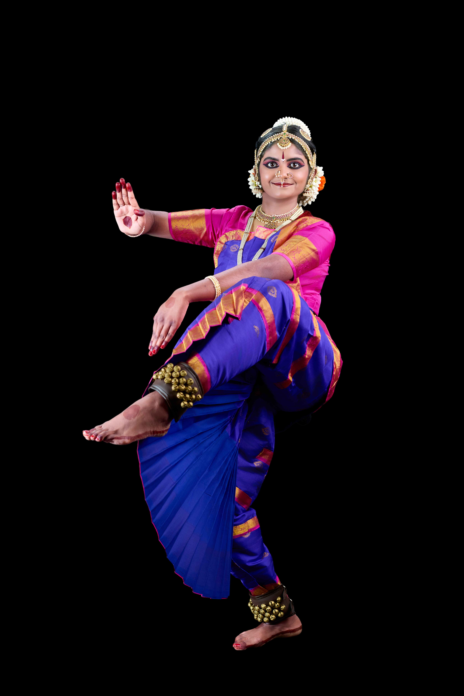

Shibani's Dance Journey

Shibani’s journey in the world of dance began at the tender age of four, when she took her first steps in Bharatanatyam under the guidance of the renowned Bharatanatyam dancer and Malayalam actor, Guru Suchitra Murali. From the very beginning, Guru Suchitra Murali recognized in Shibani a natural command of key Bharatanatyam qualities such as laya, tala, crisp adavus, and expressive abhinaya, and nurtured these gifts with care, discipline, and encouragement.
As her passion for Bharatanatyam blossomed, Shibani continued her training under Guru Manasa, then with Guru Bhuvana Venkatraman and Guru Chintan Patel, further deepening her technique, grace, and artistic expression. For the past seven years, she has been under the dedicated guidance of Guru Alpana Kagal Jacob, whose mentorship has played a significant role in shaping her into the committed and accomplished dancer she is today.
Shibani is not only a devoted dancer but also an avid singer. Since the age of five, she has been training in music under Guru Nandini Kambi, strengthening her connection to the roots of Indian culture and heritage.
Her talents extend beyond Indian classical arts. She is a Third Degree Black Belt and an accomplished viola player, reflecting her discipline, versatility, and connection to Western music.
In school, Shibani has actively participated in Debate, DECA, and Orchestra, winning prizes for her achievements, while also being involved in several other clubs and activities. This fall, she will begin a new chapter by joining Texas Tech University as a Biology major, one of the undergraduate Bachelor of Science study paths offered through its Department of Biological Sciences.
This Arangetram is a celebration of Shibani’s years of dedication, perseverance, and artistry, as well as the blessings of her gurus, family, and well-wishers. It marks a meaningful milestone in her Bharatanatyam journey and a beautiful step forward in her lifelong pursuit of excellence.